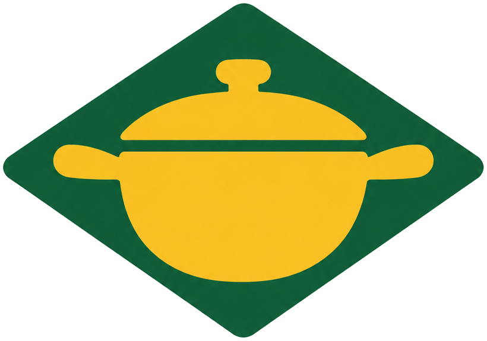

SUA COZINHA, SEU RITMO
O que vai sair
da panela hoje?
Escolha um prato e cozinhe com um passo a passo simples.
Um prato por vez
Ingredientes, preparo e dicas reunidos num só lugar.
RECEITAS PARA COMEÇAR

panela amarela.SUA COZINHA, SEU RITMO
Escolha um prato e cozinhe com um passo a passo simples.
Ingredientes, preparo e dicas reunidos num só lugar.
RECEITAS PARA COMEÇAR